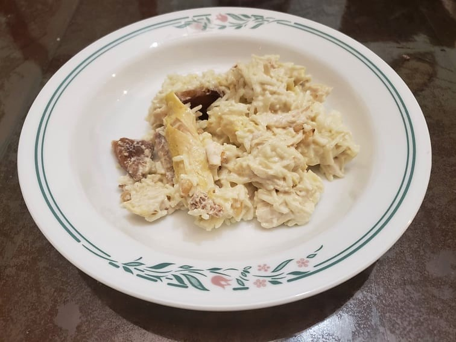

Fattet Djaj

Ingredients:
Chicken and Chicken Stock:
- 2 lb Chicken Breast, about 2 breasts, halved
- 4 cups Water
- 1 Onion, quartered
- 1 inch Cinnamon stick
- 5-7 Black peppercorns
- 3 Green cardamoms
- 3 Cloves
- 1/4 tsp Turmeric
- 1 tsp Salt
Bread:
- 2-3 Pita breads, cut into 1 inch squares
- 1/4 cup Canola oil
- Olive oil, as needed
Rice:
- 1 tbsp Canola oil
- 1 cup Basmati rice
- 1 1/2 cup Reserved chicken stock
Yogurt Sauce:
- 2 1/2 cups Plain yogurt
- 3 tbsp Tahini
- 1 Lemon, juiced
- 2 cloves Garlic, minced or crushed
- 1/4 tsp Salt
- 1/4 cup Reserved chicken stock, or to taste
Brown butter and Pine Nuts:
- 1/4 cup Butter
- 1/4 cup Pine nuts
Optional Garnish:
- 1-2 tbsp Parsley, chopped
Instructions:
- Place the chicken ingredients together into a pot. Bring to a boil and then reduce to a simmer. Simmer for about 25 minutes.
- While the chicken cooks, prepare the bread. Heat canola oil in a large pan over medium-high heat. Toss in the pita, making sure to stir and toss constantly. Add in olive oil as needed to make sure that the pita is very crunchy. Remove from heat once crunchy and place onto a paper towel lined plate.
- Once the chicken is done, remove the chicken onto a cutting board and reserve the stock. Let cool for a few minutes before shredding it with your hands or with forks.
- For the rice, heat one tablespoon oil over medium heat in a saucepan. Add the rice and sauté for about 1-2 minutes. Add in the 1 1/2 cups stock from the chicken and bring to a boil. Once it begins to boil, reduce to a simmer, cover, and cook for 15 minutes or until the water is completely evaporated.
- While the rice cooks, prepare the sauce. Combine the sauce ingredients together along with some reserved chicken stock to taste.
- When the rice is finished, begin to heat butter and pine nuts in a small pot over low heat. Keep an eye on it to make sure it does not burn. It is ready when the butter turns brown.
- Layer the dish. Begin with the pita, then the sauce, and then the chicken and rice. Then, when the butter and pine nuts are done, drizzle it over the rice. Optionally, sprinkle with chopped parsley.